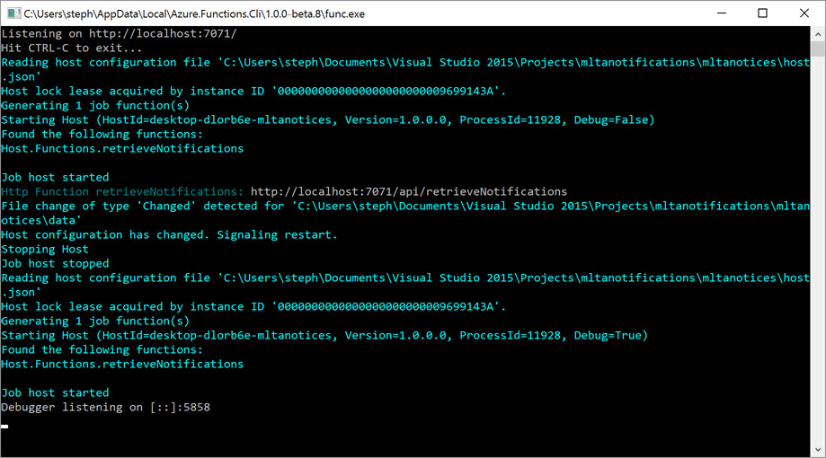

I Love Azure Functions!
A while ago, I started my Stumbling Into series. I started but only got one in – I was gonna talk about how I failed with Azure Functions next. I was failing because the docs outside C# (and node.js) were so limited that I found it difficult to get things done. However, I persevered and overcame a little bit of C#-ophobia and I can honestly say it has been so worth it.
Azure Functions take care of all the hosting, all the retry logic, all the parallelisation, all the authentication gubbins, all the monitoring for you. The only bits of code you really have to write is the important stuff – the code that implements the business process. This makes a coding project go from >500 lines to <50, and it should be better quality too! This is super handy for data integration, and I would recommend it over and above Data Factory, unless you need to do some Hadoop stuff and maybe not even then.
It was pretty pesky to have to use C# but I’m relatively over that now, and I expect continued improvement in the other languages that you can use in Functions (node.js, F#, Python, batch, bash, PowerShell). One of the biggest difficulties pre-General Availability was the lack of tooling. They had a reasonable UI in the Azure Portal but that’s not exactly a robust developer environment. I ended up making most of my Functions using a WebJob template (because Functions are based on the WebJobs codebase) and then pushing them into the necessary file formats for Functions.
This has now changed. They’ve released some nifty tooling in Visual Studio that gives you a dev experience locally. It uses the CLI under the hood which is currently a little fiddly to install. Combined with the Azure Storage local emulator and the DcoumentDB local emulator, it’s becoming pretty easy to do a whole dev and test process locally.

The Azure Functions team are amazingly responsive to issues, whether on Stack Overflow or on Github. This has made the pain of learning C#, only to be able to use Azure Functions, easier. Being able to come at their documentation with fresh eyes, make suggestions for improvements, and see those improvements made rapidly has been phenomenal.
I would really recommend anyone thinking about making data flows at scale in Azure, take a good look at Functions for achieving it. Or even low scale – in a number of regions you can now just pay per execution so it can be an incredibly cost-effective ETL tool for erratic events. My Stumbling Into post will eventually show up, with a load of my lessons learnt (or a whole series of them) but in the interim, check out the Azure Functions Challenge as a great way to get hands-on with Azure Functions.
Happy playing!